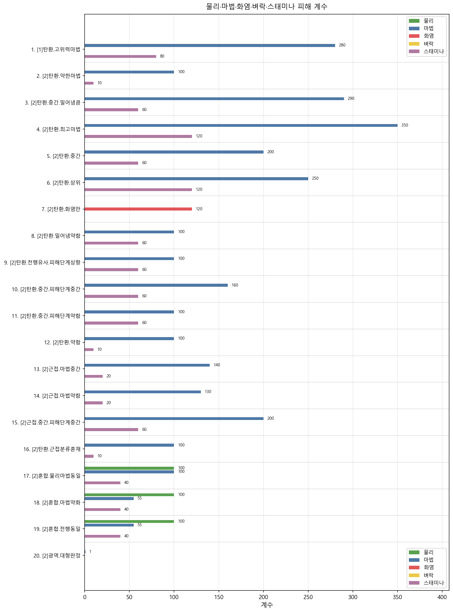

Rennala, Queen of the Full Moon (만월의 여왕 레날라)
| 개요 | 전설 보스·샤드베어러(반신은 아님). 카리아 왕가 수장이자 라이 카리아 마법학원 옛 학원장. 선택 보스이나 별의 시대 엔딩·재탄생(재분배)을 위해 격파가 필요하다. 1페이즈는 황금 기운이 든 유년 학자를 맞춰 기포를 깨는 패턴, 2페이즈는 본체 전투다. |
|---|---|
| 위치 | Academy of Raya Lucaria (라이 카리아 마법학원) — 대도서관(Grand Library) 상층 전당, 엘리베이터·지역 진행 후 도달. 가장 가까운 은혜: Debate Parlor (변론의 방). (Farum Azula 등 다른 지역 보스와 위치가 다름.) |
| 체력 (NG) | 위키 기준 NG: 1페이즈 HP 3,493 · 2페이즈 HP 4,097 (방어력 109 공통). NG+ 이후·패치에 따라 변동할 수 있음 — 상세는 위키 표 참고. |
| 면역 | 2페이즈: 수면·광기 면역. 독·부패 등 저항은 위키 Resistance 표. |
| 약점 |
1페이즈 — 표준 −10, 베기 −10, 타격 0, 관통 −10 · 마법 80, 화염 20, 벼락 20, 신성 20 (위키 negation %, 클수록 해당 속성 피해가 덜 들어감). 2페이즈 — 물리 계열 동일. 마법 80, 화염·벼락·신성 각 40(1페이즈보다 화염 등이 덜 막힘). 태세(Stance) 80, 패리 불가, 태세 붕괴 후 치명타. 주로 마법 속성으로 공격. 저항 수치는 페이즈·NG마다 위키와 다를 수 있음 — 아래 「공격별 수치」는 atkparam_npc 공격 행만 다룸. |
Fextralife 위키 원문 전투·맵·면역/약점 수치를 우선으로 하여 정리함.
스킬
| 이름 | 내용 |
|---|---|
| 1페이즈(이하[1])탄환스킬 | 대부분 약하거나 비어 있고 한 종류만 고위력 마법·스태미나·피해 단계가 크며 맵·아군 설정이 다른 한 종류가 있음. |
| 2페이즈(이하[2])탄환스킬 | 마법·밀어냄·피해 단계로 위력 구간을 나누며 화염만 있는 변형과 계수가 전부 비어 있는 변형이 있음. |
| 2페이즈(이하[2])근접스킬 | 이름과 분류가 어긋난 항목이 있어 애니메이션·불릿과 대조가 필요함. |
| 2페이즈(이하[2])혼합·광역스킬 | 물리·마법이 동시에 오르는 근접형과 판정이 큰 광역이 있음. |
공격별 수치 용어집 WIKI
| 공격 이름 | 밀어내기 거리 | 히트 스톱 시간 | 물리 피해 계수 | 마법 피해 계수 | 화염 피해 계수 | 벼락 피해 계수 | 스태미나 피해 계수 | 피해 단계 | 가드 시 공격력 비율 | 가드 붕괴율 | 히트0~3 구 반경 |
|---|---|---|---|---|---|---|---|---|---|---|---|
| [1]탄환.고위력마법 | 1 | 0 | 0 | 280 | 0 | 0 | 80 | 7 | 100 | 0 | 0/0/0/0 |
| [2]탄환.약한마법 | 0 | 0 | 0 | 100 | 0 | 0 | 10 | 0 | 100 | 0 | 0/0/0/0 |
| [2]탄환.중간·밀어냄큼 | 2 | 0 | 0 | 290 | 0 | 0 | 60 | 3 | 100 | 0 | 0/0/0/0 |
| [2]탄환.최고마법 | 3 | 0 | 0 | 350 | 0 | 0 | 120 | 7 | 100 | 0 | 0/0/0/0 |
| [2]탄환.중간 | 1 | 0 | 0 | 200 | 0 | 0 | 60 | 3 | 100 | 0 | 0/0/0/0 |
| [2]탄환.상위 | 3 | 0 | 0 | 250 | 0 | 0 | 120 | 7 | 100 | 0 | 0/0/0/0 |
| [2]탄환.화염만 | 1 | 0 | 0 | 0 | 120 | 0 | 0 | 0 | 100 | 0 | 0/0/0/0 |
| [2]탄환.밀어냄약함 | 0 | 0 | 0 | 100 | 0 | 0 | 60 | 0 | 100 | 0 | 0/0/0/0 |
| [2]탄환.전행유사·피해단계상향 | 0 | 0 | 0 | 100 | 0 | 0 | 60 | 1 | 100 | 0 | 0/0/0/0 |
| [2]탄환.중간·피해단계중간 | 1 | 0 | 0 | 160 | 0 | 0 | 60 | 3 | 100 | 0 | 0/0/0/0 |
| [2]탄환.중간·피해단계약함 | 1 | 0 | 0 | 100 | 0 | 0 | 60 | 1 | 100 | 0 | 0/0/0/0 |
| [2]탄환.약함 | 0 | 0 | 0 | 100 | 0 | 0 | 10 | 0 | 100 | 0 | 0/0/0/0 |
| [2]근접.마법중간 | 1 | 0 | 0 | 140 | 0 | 0 | 20 | 1 | 100 | 0 | 0/0/0/0 |
| [2]근접.마법약함 | 1 | 0 | 0 | 130 | 0 | 0 | 20 | 1 | 100 | 0 | 0/0/0/0 |
| [2]근접.중간·피해단계중간 | 1 | 0 | 0 | 200 | 0 | 0 | 60 | 3 | 100 | 0 | 0/0/0/0 |
| [2]탄환.근접분류혼재 | 1 | 0 | 0 | 100 | 0 | 0 | 10 | 0 | 100 | 0 | 0/0/0/0 |
| [2]혼합.물리마법동일 | 0 | 0 | 100 | 100 | 0 | 0 | 40 | 1 | 100 | 0 | 0/0/0/0 |
| [2]혼합.마법약화 | 0 | 0 | 100 | 55 | 0 | 0 | 40 | 1 | 100 | 0 | 0/0/0/0 |
| [2]혼합.전행동일 | 0 | 0 | 100 | 55 | 0 | 0 | 40 | 1 | 100 | 0 | 0/0/0/0 |
| [2]광역.대형판정 | 4 | 0 | 0 | 1 | 0 | 0 | 0 | 7 | 100 | 0 | 4/0/0/0 |
그래프
